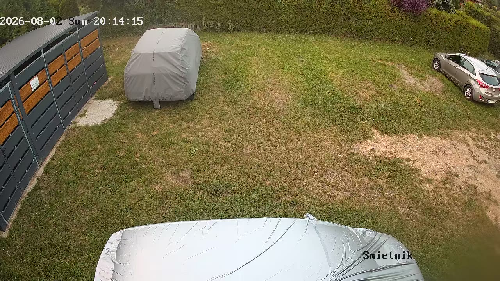
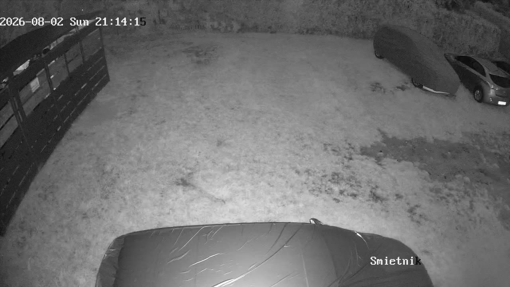
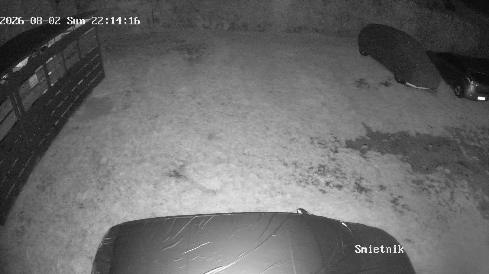
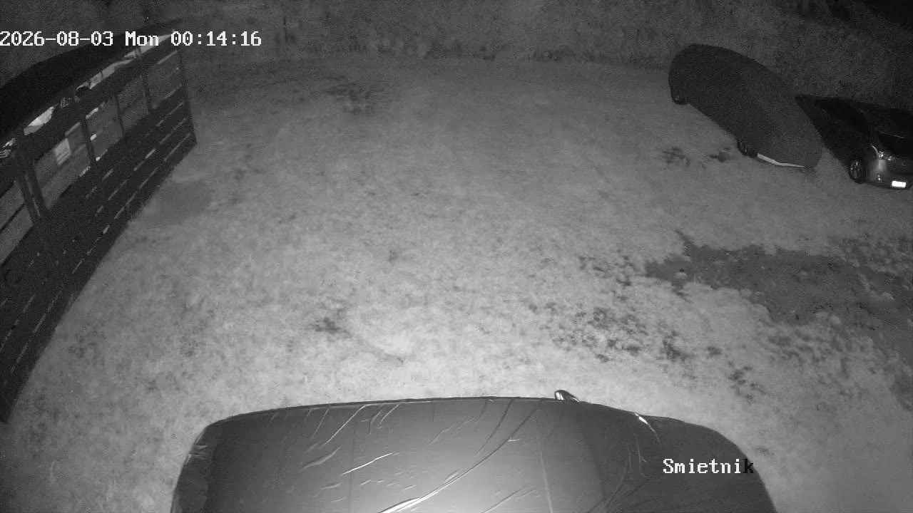
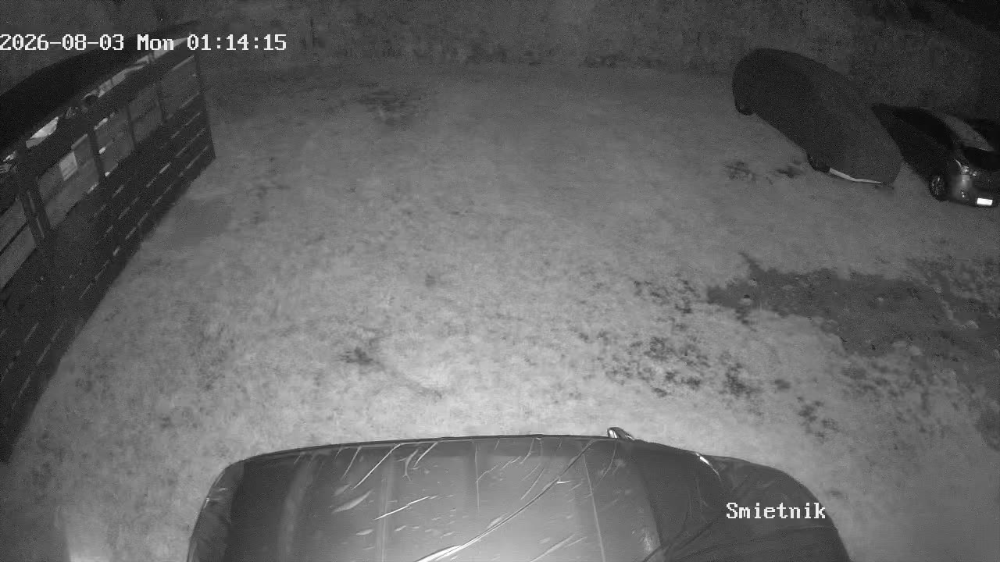
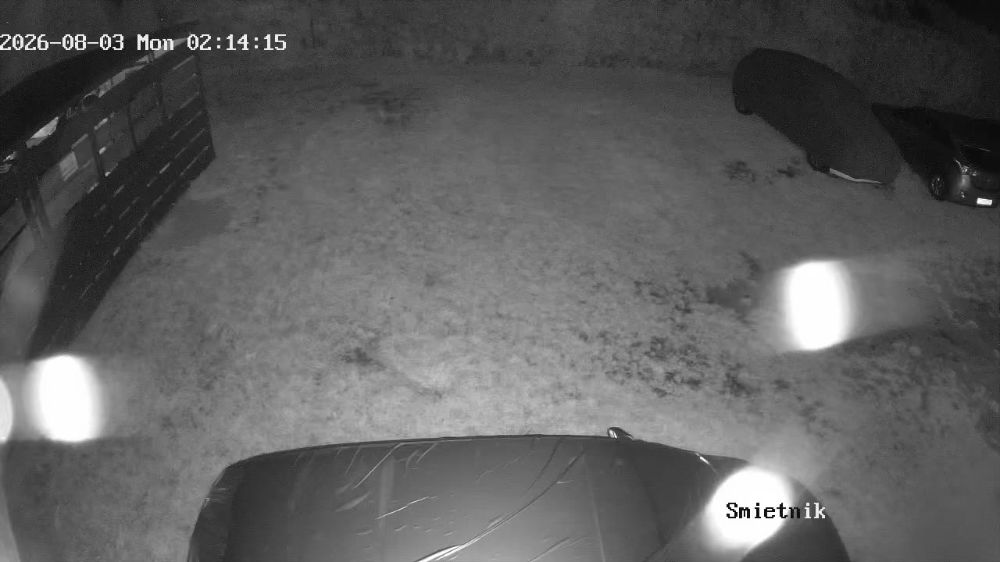
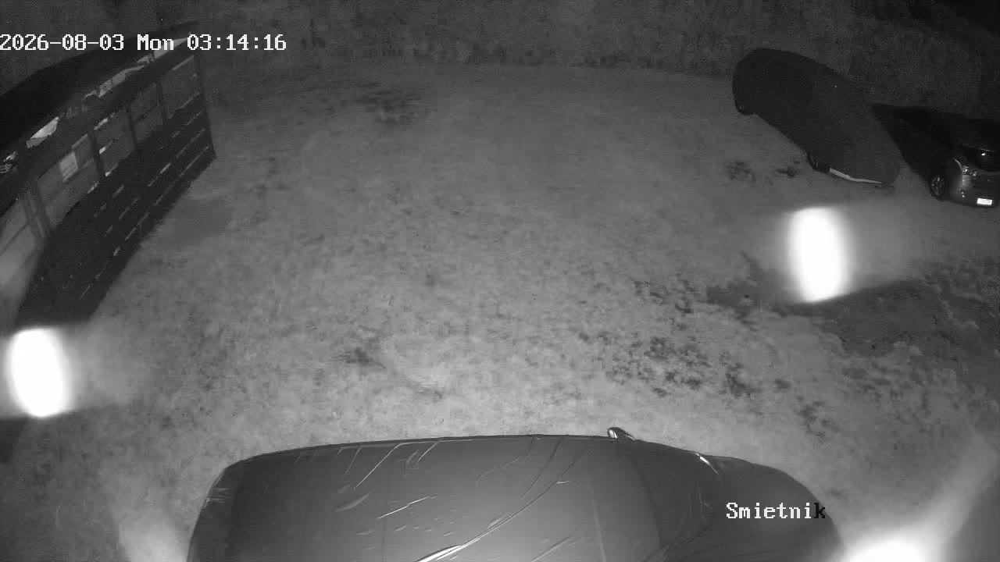
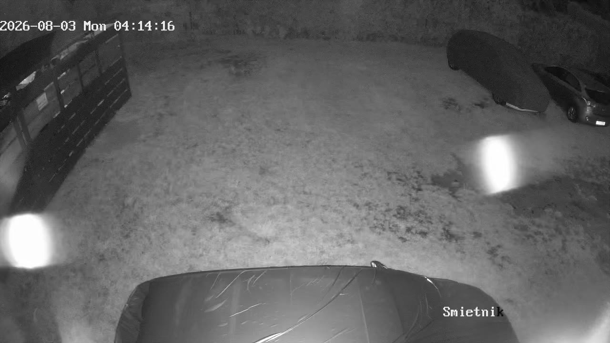

Cała noc 2/3 sierpnia, co godzinę — kamera Śmietnik
Szukamy Opla Insignii kombi, ustawionego tyłem.
Klatki co godzinę, od 20:14 wieczorem do 04:14 nad ranem.
Powiedz, na której godzinie auto już stoi i w którym miejscu kadru —
wtedy przestawię obszar szukania na nie i przemielę noc jeszcze raz.

20:14 segment 000
21:14 segment 006
22:14 segment 01223:14 segment 018
00:14 segment 024
01:14 segment 030
02:14 segment 036
03:14 segment 042
04:14 segment 048